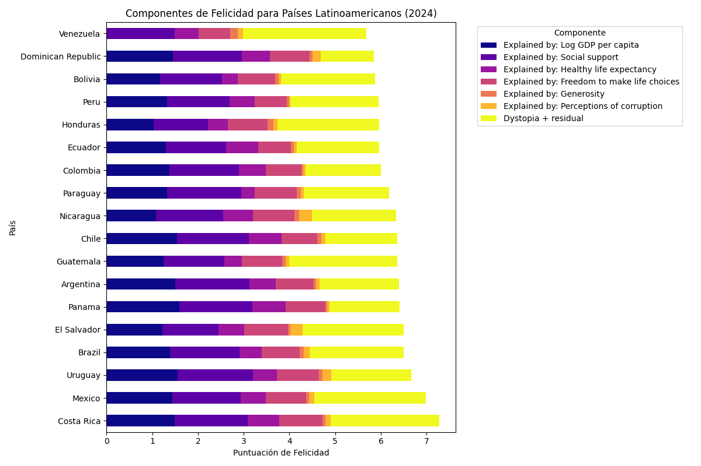
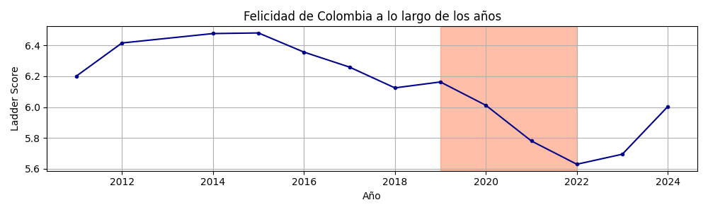
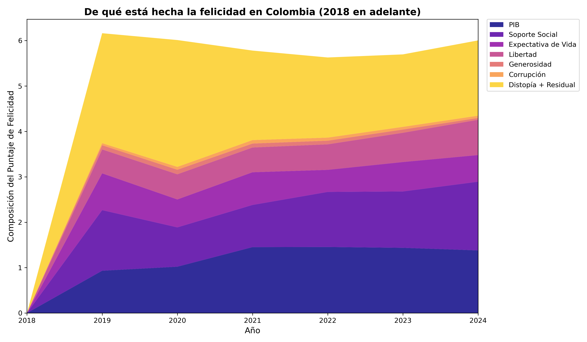
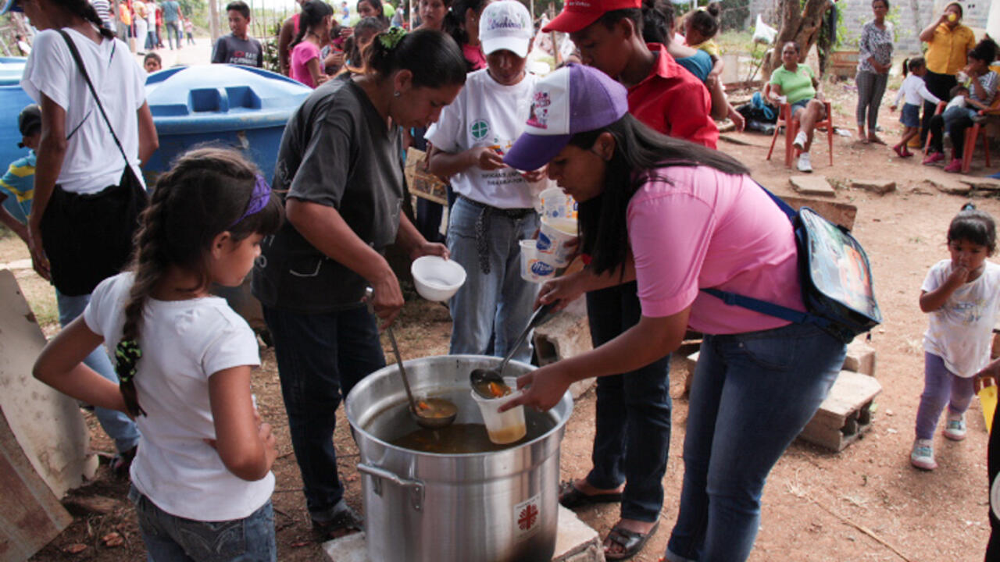
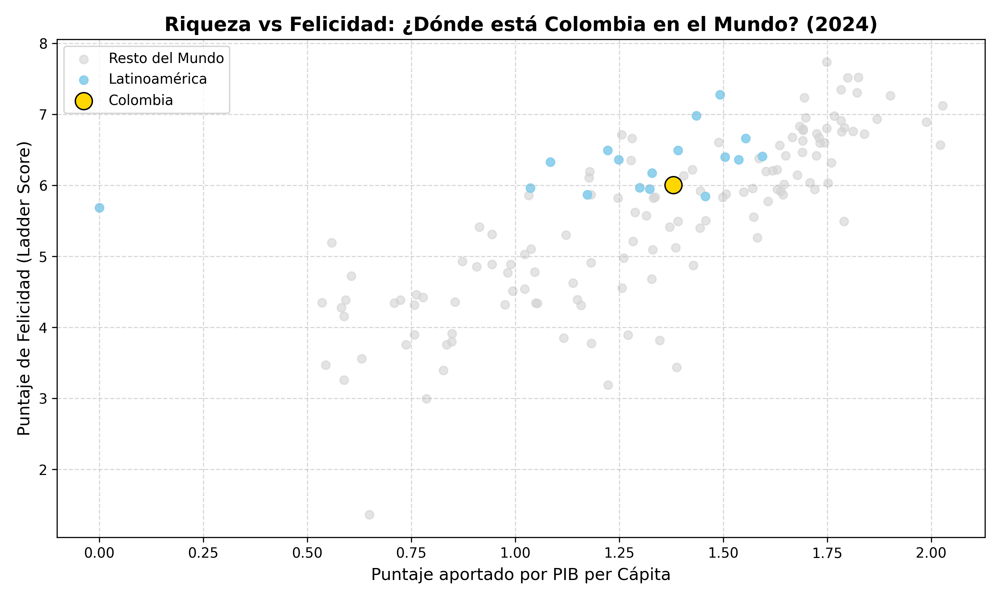
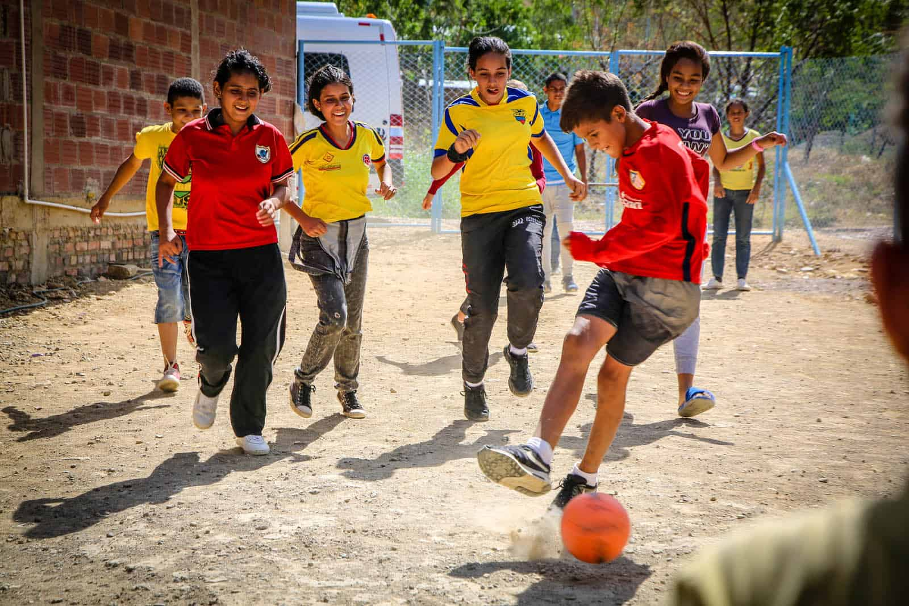

El vecindario que desafía la lógica.
América Latina es un continente que sonríe a pesar de las grietas. En el mapa frío de los números, nuestro vecindario es un caso de estudio fascinante: a pesar de los inmensos desafíos económicos y la desigualdad, nuestras barras se alzan fuertes.
No es el dinero lo que lidera el gráfico, es la resiliencia pura, el calor humano y una libertad obstinada para buscar la alegría en medio de la adversidad.

Mercado local en Latinoamérica. La vitalidad de la región contrasta con sus retos económicos.
El pulso de un país herido.
Esa línea no es una simple estadística; son los latidos de Colombia. Tocamos un pico de esperanza entre 2012 y 2016, soñando con un país en paz. Pero la línea se desploma abruptamente hacia el 2021.
No fue solo un virus; fue un país fracturado por el Paro Nacional, el hambre en las calles, la polarización y la incertidumbre. Fue el momento en el que la sonrisa de nuestra nación se quebró casi por completo.

Estallido social en Colombia durante 2021. Un punto de inflexión en la percepción de bienestar.
Lo que nos mantiene a flote.
Si la crisis de 2021 fue tan profunda, ¿por qué nuestro puntaje no llegó a cero? Al abrir la historia, los datos revelan nuestro mayor secreto: El Apoyo Social.
Esa gruesa franja naranja que no cede ante la inflación ni la corrupción. Cuando el Estado falla, es la red invisible del vecino, el sancocho familiar del domingo y la olla comunitaria lo que nos rescata del abismo. Nos salvamos los unos a los otros.


El apoyo comunitario se convierte en el principal amortiguador frente a las crisis institucionales.
La paradoja de nuestra riqueza.
Míranos allí, iluminados en amarillo, lejos de los países más ricos del mundo, pero asombrosamente altos en nuestra capacidad de ser felices.
La historia final que nos cuentan estos datos es que el colombiano aprendió, quizás a la fuerza, a desligar su bienestar de su cuenta bancaria. Somos un país que construye su alegría sobre pilares más profundos que el oro.


La riqueza emocional e interpersonal a menudo trasciende las limitaciones materiales.